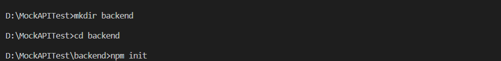
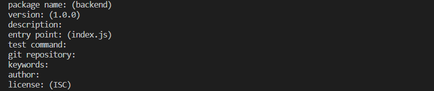
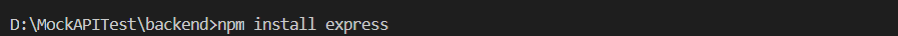
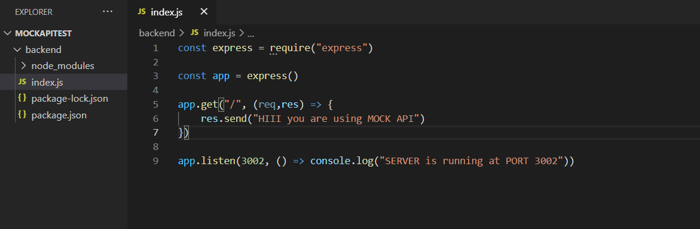
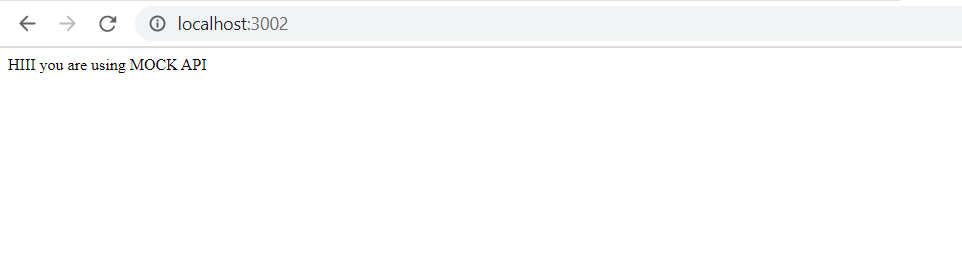
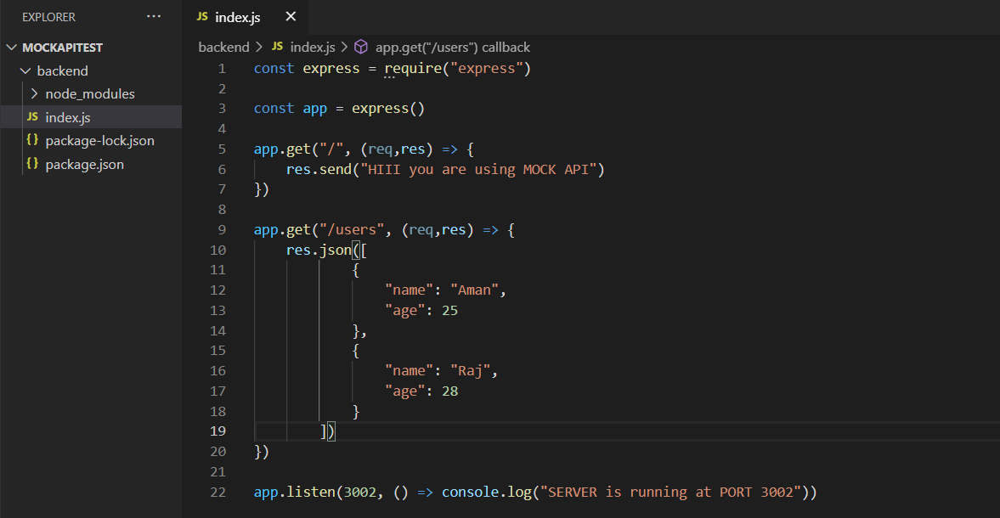
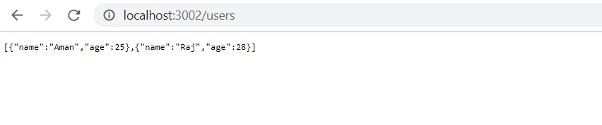

Mock API
Date: November 2020

You are a Frontend Developer and you need API to get json data from a server to make your front-end app alive. But you don't always need a real web service to test your app. You can mock(or fake) an API.
Why Mock API
Here are some reasons to use Mock API
-
No real working API: When the Front-end and Back-end teams are working parallelly, there is no finished API to give data to front-end. So front-end requires dummy data to build your UI against. So mock API allows you to begin development without waiting for the API team to build the services.
-
API call limit: There could be hourly/daily call limits OR API calls can be sometimes expensive to call repeatedly. So, it offers consistent, instantaneous responses to test UI.
-
Work Offline: If you have internet issues, your app would still work given that it is mocking data locally.
Lets Create a Mock API
-
Lets start with creating a folder backend and initialize npm inside it. It will ask some questions. Just press "Enter" for every question asked
  -
Next install express in your app
 -
It should create some files with dependencies inside the backend folder. Now create a "index.js" file inside the backend folder. And type the following code inside it.
 -
Finally, to start your server, run "node index.js" in terminal
In terminal you should see "SERVER is running at PORT 3002"
Your own server is ready now
- Open your favourite browser
- Navigate to "http//:localhost:3002/"
- You should see the response. "HIII you are using MOCK API"
- 
-
Now make a different GET request at different route "/users" as shown bellow.
NOTE: Every time you make changes in "index.js", you have to cancel the previous server and restart the server by running "node index.js" in terminal.
-
Hit the route "localhost:3002/users" for a GET request.

Let us Test it
Bingo! your own API is ready to serve json data to your frontend.